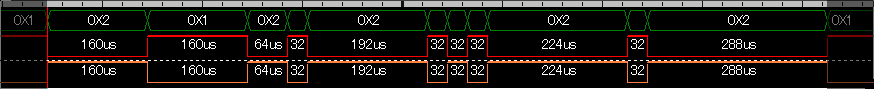
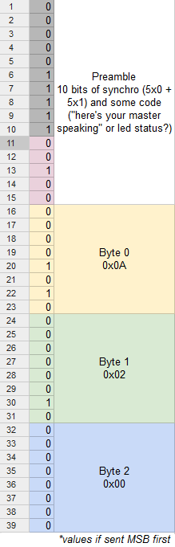

Why making a pedal ?
I have at home a
Line6 POD HD Desktop which I'm very happy about, but I'd like to be able to use a pedal too. For instance for the looper (great but useless if you need to start/stop it with your fingers), maybe switch between settings for intro/rythm/solo ... well all those things you do with a pedal!
Being curious and careful with my money (sometimes) I dug into the idea of making one myself instead of buying Line6 cheapest compatible one, a
FBV EXPRESS™ MkII (80%20 USD on amazon). Apparently it was a not so hard task with former models (see the links here under) but with my POD HD Desktop, unfortunately things got complicated. Line6 took a even more all-digital turn, even for the pedals. This page is the place where I'll store my remarks, I hope it can help you.
RJ45 connector
Connector is a regular RJ45, 8 pins. Don't use those fancy one with 2 leds embedded and maybe even with the ferrite inside, it just short the wires 8 to 6 and force your POD to reset. Use a plain vanilla RJ45 connector.
Pin#
|
Readouts
|
Analysis
|
1
|
GND
|
GND
|
2
|
%208.7v
|
9v wannabe ? Additional power for some component on the pedal?
|
3
|
GND
|
GND
|
4
|
GND
|
GND
|
5
|
%208.7v
|
9v wannabe ? Additional power for some component on the pedal?
|
6
|
%205v
|
Voltage for the logic and chips in the pedal (and reference maybe)
|
7
|
%205v
|
Pulled-UP data wire. Let's name it D%20
|
8
|
%200.02v
|
Pulled-DOWN data wire. Let's name it D-
|
Readouts are simple analysis done with a multimeter, nothing fancy. Then I put all the lines in my DSO oscilloscope to identify those who just seem to be fixed voltage but aren't. Bingo, at least pins 7 and 8 are in that group. The strange 9v-ish pins are still mystery, but maybe they are just really 9v.
Of course don't short GND and the 9v pins, your POD will restart (you're shorting power, kinda bad thing to do). We can assume that it's protected but let's just not do it willingly.
D%20/D- bus
Then I put the 2 D%20/D- pins on my
LAP-C Zeroplus Logic cube 16064 to have some more info.

Quick analysis based on this diagram (situation : nothing plugged on the POD) :
- The 2 wires are mirror of one another, like in USB communications hence the names I picked D%20 and D-
- It transmits a packet every 200ms, one packet lasts 1.26ms
- Shortest impulse is 32us means a guessed frequency F = 1 / 32us = 31.25kHz
- It looks like USB (2 wires in mirror) but it's not USB because :
- Frequency : 50 kHz, too low for USB even 1.0
- USB needs a stuff bit every 6 consecutive 1's (lines unchanged) and we can see last part being 288us = 9 bits on the row of the same value.
So what could it be?
- MIDI : the best bet seeing that the carrier is 31.25 kHz and midi works at 31.25 kBauds!
- Yes but ... how do we answer ? Shall we take control on the bus ? Lower the 5v pin ?
- Alternates:
- 2 wires ... I2C ? No, SDA is data and SCL is a clock, obviously none of these pin is clock.
- SPI : still need to interpret the commands
- Custom protocol : will be hard to understand without a real pedal to compare
Sample message interpretation
Let's say that it's like USB: both line at normal level is 1, inverted is 0. And let's assume codes are send MSB first.
We get if we remove what looks like a preamble 3 bytes remaining : 0x0A 0x02 0x00
Documentation and links
MIDI
Pedal RJ45 connector (OLD version)
README : This document relates to the FORMER version of Pedal that DON'T work with my POD HD Desktop. It's a good reference, but can't be used since their system has changed drastically.